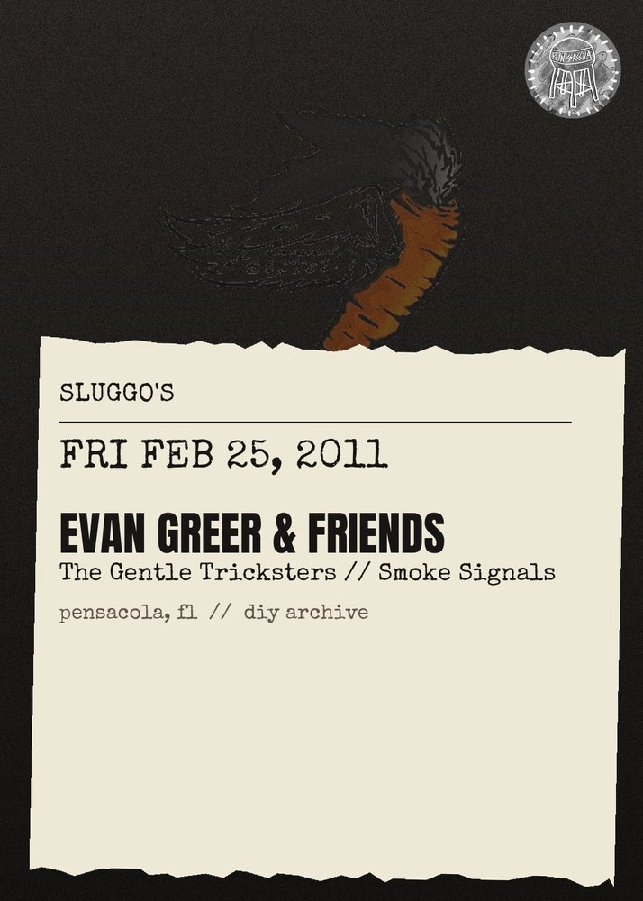

Evan Greer & Friends, The Gentle Tricksters, Smoke Signals
Evan Greer & Friends: radical genderqueer singer\/songwriter who writes and performs high-energy acoustic songs that inspire hope, build community, and incite resistance! \"\"Evan Greer is an eloquent and energetic writer. (S)he reminds me of Phil Ochs.\" --Howard Zinn, historian and author of A People's History of the United States\nhttp:\/\/www.riotfolk.org\/?m=evangreer\n\nThe Gentle Tricksters: bluegrass, folk and punk inspired tunes and stories from veterans and artists riding their bicycles until the occupations of Iraq and Afghanistan end!\nhttp:\/\/operationawareness.org\n\nSmoke Signals: golden-voiced piano-based singer\/songwriter from Pensacola!\n\n\nALSO FEATURING: A Ride Till The End (ARTTE) veterans & artists organizing to defend openly-gay Army Private First Class Bradley Manning, who is accused of leaking classified information to Wikileaks\nhttp:\/\/operationawareness.org\/rebelwithacause.htm